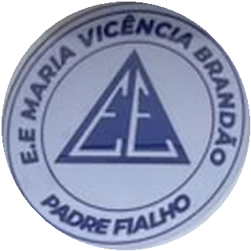
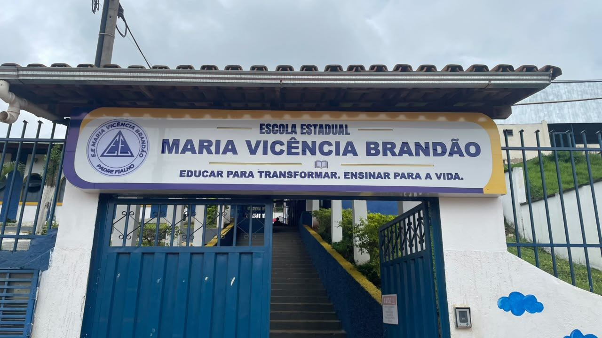

Irrigação inteligente
Sistema automático de irrigação criado pelos alunos, vencedor da feira da escola.

E.E. Maria Vicência BrandãoPadre Fialho · MGPadre Fialho · Minas Gerais
Avisos, eventos e projetos da Escola Estadual Maria Vicência Brandão, num só lugar.
Ver últimas notícias
A Escola Estadual Maria Vicência Brandão fica em Padre Fialho, Minas Gerais, e faz parte da SRE Manhuaçu. Aqui você acompanha tudo o que acontece no dia a dia da escola: avisos, eventos, projetos dos alunos e conquistas.
Nosso compromisso é educar para transformar e ensinar para a vida, com alunos, famílias e professores caminhando juntos. A escola também oferece o Ensino Médio Técnico Integrado (EMTI) em Informática.
Sistema automático de irrigação criado pelos alunos, vencedor da feira da escola.
Montagem em sala, no Tinkercad, de um Arduino Uno com 9 LEDs piscando em sequência.
Uma equipe de alunos desenvolve o próprio jogo, com quadro de tarefas e divisão de equipe.